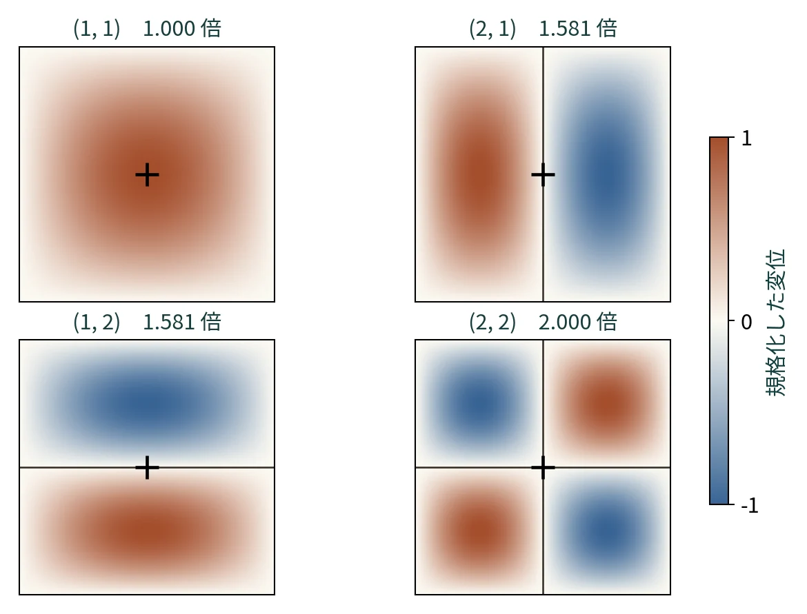

第44章 太鼓の形は聴き取れるか
すべての固有振動数が分かれば、太鼓の形は分かるのか。
この章で学ぶこと
- 長方形の膜の固有振動数を導く
- 縮退と、打点によって「鳴らない振動」があることを理解する
- 形が聴き取れない反例と、面積なら聴き取れるというワイルの法則を知る
一打を、形の測定にする
壁の向こうで誰かが一枚の膜を打った。完璧な測定器を用意すれば、膜の輪郭を描けるだろうか。音から原因を逆算する手続きを逆問題と呼ぶ。まず順方向で何が音に刻まれるか調べたい。楽器の周波数には寸法・張力・材質が共に入り込む。そこで材質と張力を既知とし、輪郭の形だけを変える。さらに打点や録音条件によって一部の周波数が消える不都合を避け、理想的に「すべての固有振動数とその重複度」を教えてもらうことにする。実際の観客より、はるかに有利な条件である。
正方形の膜にはなぜ同じ高さが二つあるのか
面密度 、各方向に一様な単位長さあたりの張力 の薄膜を考える。横方向の位置を 、時刻を 、平面からの微小な変位を とする。一辺が微小な長方形を切り出すと、左右の張力の上下成分の差は、面積あたりで 。上下の辺からは が加わる。質量あたりに直せば 、ただし が波の速さとなる。小さい添字を重ねた は各変数に関する二階偏微分を表す。曲げ剛性、周囲の流体、エネルギーの散逸はこの式に含めていない。
辺長 の長方形で、周縁を動かないよう固定する。端でちょうどゼロになる関数として、二方向にそれぞれ半波を 個詰める。次の形に振動させて波動方程式を満たす周波数を探す。
二度微分すると、時間側の係数は 、空間側は である。それらを等しくし、正の平方根を取ると
を得る。正方形では、縦に二分された振動 と横に二分された振動 の周波数が等しい。二つの空間模様が一つの数に合流した。これが固有値の縮退である。片方だけに小さな重りを貼るとどうなるだろう。元の二つの振動がその点でどれだけ動くかを調べれば、対称性の破れが二つの線を分け得ることが予想できる。縮退した空間では、重りの位置に合わせた二つの模様の線形結合も考える必要がある。

打点が中心なら、初期の点状の力が各模様に与える重みは、その場所でのモードの値に比例する。中心における二つの正弦の積は 。したがって の片方でも偶数なら消える。図の四つで残るのは左上だけだ。録音に線がないという観測には「その振動は存在しない」と「その振動を今回の打点が励起しなかった」の少なくとも二通りの説明がある。さらに受音位置と空気中への放射効率も、見える線を選別する。
すべて測れたとしても残るもの
形状を 、固定端の振動に対応する空間作用素を とする。 は先ほどの二つの空間二階微分の和である。 の固有値 と固有周波数は で対応する。Gordon、Webb、Wolpert（ゴードン、ウェッブ、ウォルパート）は1992年に、合同でない二つの単連結な平面領域で、固定境界に対する固有値列が重複度ごと等しくなる例を与えた。一つの反例が「すべての形で逆算可能」という全称命題を退ける。先ほどの正方形の図は縮退を説明する例であり、この論文の二つの領域については原論文の図1を見てほしい。
同じ固有値列から得られる量もある。固定端の有界な平面領域で境界が十分規則的なら、値 以下の固有値の個数 は、 を大きくすると となる（ワイルの法則）。 は面積である。直観を得るため長方形の式に戻ろう。 を満たす正整数の対は、半軸 の楕円の第一象限にある格子点だ。大きい楕円では格子点に単位正方形を置いた面積と四分の一楕円の面積の差は、境界に沿う一定幅の帯に収まり である。従って主項は 。これで長方形の場合の極限を示せた。一般領域の証明は別に要る。「面積は聴こえる」と「輪郭が聴こえる」の間に隔たりがあることが、ここで数式になる。
ティンパニの音高を設計する
バルトーク《弦楽器、打楽器とチェレスタのための音楽》第三楽章のティンパニを聴こう。反復する木琴の打音の輪郭と、低い音高が滑る身振りとを、二本の線で紙に写す。膜の打音にも、追跡できる音の高さがある。実物のティンパニでは円形の膜・胴・空気が結合し、膜の各モードが空気を動かす程度も異なる。打点は相対振幅を変え、ペダルは張力を変える。手元の正方形の数表をティンパニ録音の周波数表として適用する根拠はない。一方、何を固定し何を動かした演奏かを区別する道具としては働く。
やってみよう
予測と検算。 同じ膜の張力だけを4倍にし、寸法と面密度を保てたとする。波速は 倍なので各 は2倍となる。次に張力を戻し、一辺が0.50 mの正方形を、波速 m/sとして計算しよう。 Hz、 Hzで、その比は約1.581。第二の線は整数倍音の第2倍音と一致しない。この線を中央の点打撃に加えてしまう電子太鼓は、指定した物理モデルから逸脱する。中心を外して打つ別の音色としてプログラムすれば、制作上の根拠が生まれる。
ここだけ押さえる
- 正方形の膜では (2,1) と (1,2) の振動が同じ高さになる（縮退）。
- 録音に線がないのは「存在しない」のか「励起されなかった」のか、二通りの説明がある。
- 面積は固有値から分かるが、輪郭までは一意に決まらない。
この章の資料
- Gordon・Webb・Wolpert「One cannot hear the shape of a drum」 — 図1で二つの領域を比較し、論文が等しいと証明したデータの種類を確かめる。冒頭に面積についてのワイルの結果にも言及がある。
- Georgia State University・円形膜のモード — 円形膜の節直径と節円を見る。正方形の二つの整数が表すものと比較する。
- R. I. Mills・ティンパニの振動測定 — 理想円形膜の予測と実測がずれる要因を、実験で区別する研究。
- フランクフルト放送交響楽団・バルトーク全曲の演奏映像 — 第三楽章 Adagio の木琴とティンパニに焦点を合わせる。